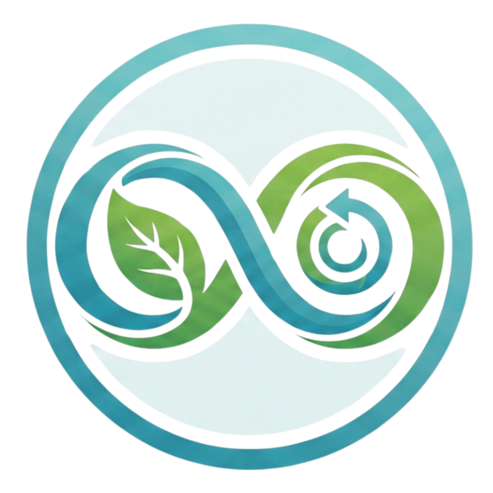

Belum Ada Data
Scan makananmu untuk mulai melihat ringkasan pola makan harian di sini.
Scan Makanan
Arahkan kamera ke makanan untuk melihat estimasi kandungan & dampaknya bagi kesehatan reproduksi.
Riwayat Scan
Lihat semua ›Layanan NutriRepro-AR
Pastikan objek terlihat jelas
Kamu tetap bisa mencari nama makanan secara manual di bawah.
Atau cari nama makanan
Mengapa makanan ini perlu diperhatikan?
—
Rekomendasi Alternatif Sehat
—
Sumber Acuan Umum
- Kemenkes RI — Pedoman Gizi Seimbang
- WHO — Reproductive Health & Nutrition Guidance
- American Society for Reproductive Medicine (ASRM) — materi edukasi gizi & kesuburan
Konten ini merupakan ringkasan edukatif atas tema yang umum dibahas pada sumber-sumber di atas, bukan kutipan studi tunggal dengan angka klinis presisi.
Tren Kesehatan Vaskulo-Reproduksi
30 hari terakhirLog makanan bulan ini
Belum ada riwayat scan.
Hasil pemindaianmu akan muncul di sini.
Aliran Darah ke Organ Urologi & Reproduksi
Pembuluh darah dalam kondisi lentur & terbuka
Geser bilah di atas untuk melihat simulasi bagaimana konsumsi fast food yang berulang memengaruhi elastisitas pembuluh darah menuju ginjal, kandung kemih, dan organ reproduksi.
Materi Edukasi
Penelitian Terkait Diet & Kesehatan Vaskulo-Reproduksi
Kumpulan artikel jurnal ilmiah (PubMed/PMC) yang mendasari materi edukasi NutriRepro-AR, dikelompokkan per topik. Cari kata kunci atau pilih kategori untuk menemukan bacaan sesuai materi yang kamu inginkan.